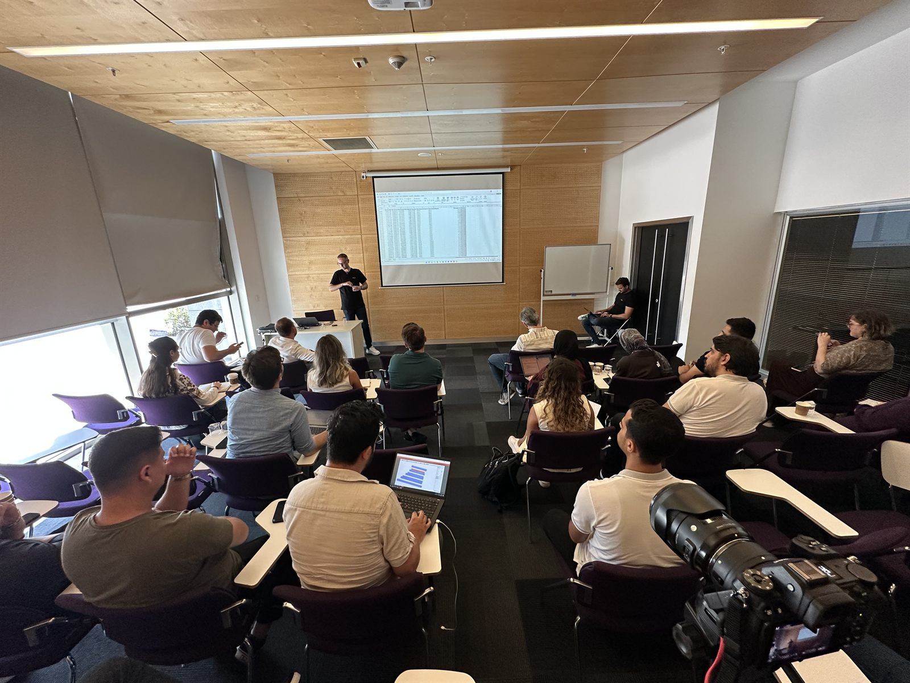

Hakkımda
Solar Mühendislikte Tasarım, Saha ve Yazılım
Elektrik Elektronik Mühendisi ve güneş enerjisi mühendisi olarak utility-scale ve çatı tipi güneş enerjisi santral tasarımı projelerinde; arazi analizi, cut and fill analysis, electrical design, string design, cabling, PVsyst tabanlı üretim değerlendirmesi ve maliyet optimizasyonu üzerine çalışıyorum. Bu platformda amacım, proje ekiplerinin karar süreçlerinde doğrudan kullanabileceği uygulanabilir mühendislik içeriği üretmek.

Profil
Güneş enerjisi projelerinde arazi verisini analiz ederek tasarım kararlarına dönüştürüyoruz.
Topografya analizi, hafriyat yaklaşımı (cut & fill), grading stratejileri, elektriksel yerleşim, stringing ve kablolama kurgusu ile üretim simülasyonlarını entegre bir şekilde ele alıyoruz. Bu süreçte; araziye bağlı hafriyat maliyetleri, kablolama mesafeleri ve kayıpları, saha uygulanabilirliği ve teknik kısıtlar birlikte değerlendirilir.
Farklı tasarım alternatiflerini karşılaştırmalı olarak analiz ederek, teknik riskleri erken aşamada görünür hale getiriyor; üretim, maliyet ve yatırım geri dönüşü üzerindeki etkilerini finansal perspektifle birlikte değerlendiriyoruz. Bu yaklaşım ile proje geliştirme sürecinde karar vericiler için net, karşılaştırılabilir ve uygulanabilir mühendislik çıktıları oluşturuyoruz.
Gönüllü Çalışmalarımız
Teknik bilgi paylaşımını saha gerçekliğiyle birleştiren gönüllü çalışmalarda; genç mühendisler, öğrenci toplulukları ve proje ekipleri için uygulamaya dönük içerikler üretmeye odaklanıyoruz.
Amacımız, güneş enerjisi projelerinde daha nitelikli karar süreçlerine katkı sağlayacak, erişilebilir ve tekrar kullanılabilir bir teknik paylaşım kültürü oluşturmak.
